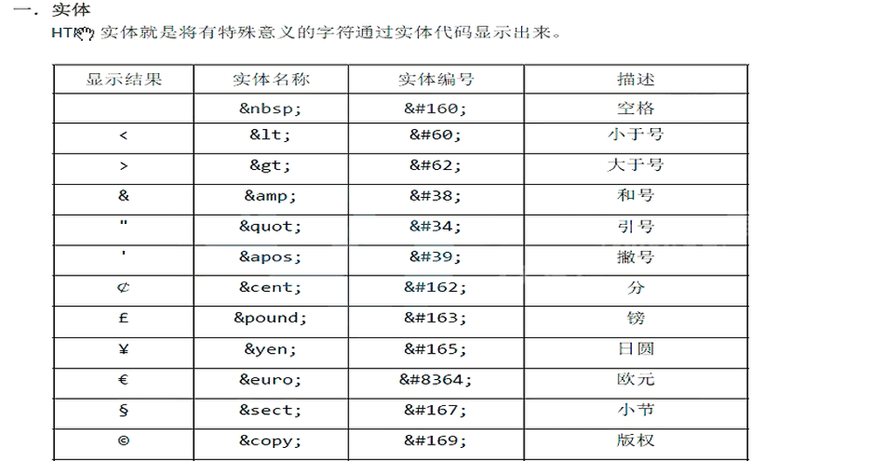
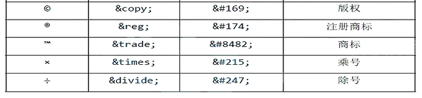

用于提供页面的元数据。大概有:
指定名/值元数据对，例如页面作者、页面描述(description)、页面关键字(keywords)等。用法如下:
<meta name="author" content="刃舞">
指定页面字符编码，如UTF-8
自我刷新和指定时间跳转到其它页面:
<meta http-equiv="refresh" content="10;http://www.baidu.com">
如上代码，表示10秒后跳转到百度页面。如果不指定网址，就是自我刷新。
全局属性即通用属性，有很多，常用的有id、class、style等。
contenteditable:属性值为“ture”时，使该元素的内容可以在浏览器内被编辑，可以用于提交，当然源代码是不会变的。
dir:设置文字顺序，从左到右ltr，右到左rtl。
hidden:可以隐藏一个元素。
lang:设置元素使用的语言。
title:为元素添加一个工具提示框，当鼠标移动到该元素的内容上时，显示提示。